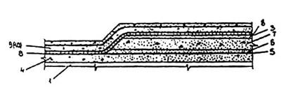
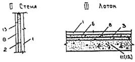
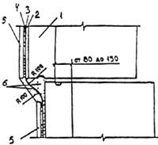
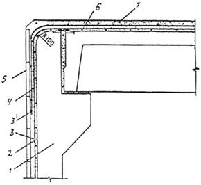
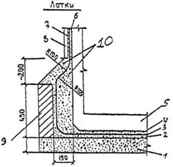
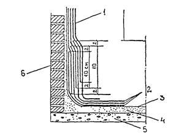
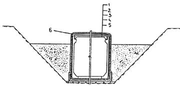

АКЦИОНЕРНОЕ ОБЩЕСТВО КОРПОРАЦИЯ «ТРАНССТРОЙ»
НОРМЫ
ПО ПРОЕКТИРОВАНИЮ И УСТРОЙСТВУ
ГИДРОИЗОЛЯЦИИ ТОННЕЛЕЙ
МЕТРОПОЛИТЕНОВ,
СООРУЖАЕМЫХ ОТКРЫТЫМ СПОСОБОМ
ВСН 104-93
Москва 1993
Разработаны Научно-исследовательским центром «Тоннели и метрополитены» Ордена Октябрьской революции научно-исследовательского института транспортного строительства (НИИТСа) - канд. техн. наук В.Ф. Сарабеев, при участии канд. техн. наук Б.Н. Виноградова (НИИТС), Мосметростроя - канд. техн. наук И.М. Якобсон, Тоннельнообследовательской и испытательной станции метрополитенов МПС России - инж. А.В. Балашов, специализированной производственной фирмы «Тоннельметрострой» - Ю.Н. Абрамов.
Внесены ордена Октябрьской революции научно-исследовательским институтом транспортного строительства (НИИТСом).
Подготовлены к утверждению Научно-техническим центром Акционерного общества Корпорация «Трансстрой».
С введением в действие «Норм по проектированию и устройству гидроизоляции тоннелей метрополитенов, сооружаемых открытым способом» ВСН 104-93 теряет силу «Инструкция по проектированию и устройству гидроизоляции тоннелей метрополитенов, сооружаемых открытым способом» ВСН 104-79.
Согласованы Ассоциацией «Объединенная дирекция строящихся метрополитенов», фирмой «Тоннельметрострой».
Разработаны в развитие СНиП 2.05.04-93 «Метрополитены».
Экспериментально-теоретические исследования выполнены НИИТСом, Метрогипротрансом и его филиалами, СКТБ Тоннельметростроя, ПКТИтрансстроем, ВНИИавтогенмашем, Мосметростроем, Харьковметростроем, Киевметростроем, Ташметростроем и другими организациями.
|
Акционерное общество |
Ведомственные строительные нормы |
ВСН 104-93 |
|
Нормы по проектированию и устройству гидроизоляции тоннелей метрополитенов, сооружаемых открытым способом |
Взамен ВСН 104-79 Минтрансстроя СССР |
Настоящие Нормы устанавливают общие требования к проектированию, производству и приемке работ по гидроизоляции обделок тоннелей метрополитенов, сооружаемых открытым способом из сборного или монолитного железобетона.
1.1. Гидроизоляция обделок тоннелей должна предотвращать проникание грунтовых вод и электрохимическую коррозию, обеспечивая нормальные условия эксплуатации метрополитенов.
1.2. Тип и конструкцию гидроизоляции следует назначать с учетом специфики конструкции обделки, гидрогеологических условий заложения тоннеля, условий его сооружения, технико-экономических показателей.
1.3. Гидроизоляция тоннелей открытого способа работ должна выполняться в виде сплошного, замкнутого послойно склеенного водонепроницаемого покрытия, приклеенного по всей наружной поверхности конструкции.
Материалы для гидроизоляции должны быть водо-, био- и химически стойкими.
По гидроизоляции необходимо устраивать защитный слой или защитное ограждение (рис. 1).
1.4. Работы по гидроизоляции во всех климатических зонах следует производить на сухих и чистых поверхностях при благоприятных погодных условиях (температура воздуха выше +5 ℃ и отсутствии атмосферных осадков) или под защитой передвижных покрытых брезентом навесов, а в зимнее время - в тепляках из негорючих материалов.
|
Внесены ордена Октябрьской Революции научно-исследовательским институтом транспортного строительства (НИИТСом) |
Утверждены 28 января 1993 г. № МО-18 |
Срок введения 01.10.1993 г. |
Рис. 1. Общий вид тоннеля с гидроизоляцией:
а - однопутного тоннеля; б - двухпутного тоннеля; 1 - сборная железобетонная обделка; 2 - гидроизоляция; 3 - бетонная подготовка или распределительная железобетонная плита; 4 - защитная стенка; 5 - защитный слой
1.5. Для оклеечной гидроизоляции из рулонных материалов с послойной их наклейкой на горячих битумных мастиках могут применяться как биостойкие беспокровные (гидроизол), так и допускаются покровные (гидростеклоизол) рулонные материалы.
1.6. Оплавляемую гидроизоляцию сборной и монолитной железобетонных обделок в стадии сооружения тоннелей, а также предварительную гидроизоляцию цельносекционных элементов в заводских условиях или на полигоне, следует выполнять из утяжеленных битумных рулонных материалов на стекловолокнистой основе (гидростеклоизола), послойно наклеиваемых без приклеивающих мастик, путем оплавления поверхности покровного слоя пламенем газовоздушных пропановых горелок и прижатием к гидроизолируемой конструкции.
1.7. При сооружении цельносекционной обделки проходческим комплексом КМО 2×5 необходимо выполнять предварительную гидроизоляцию секции в заводских условиях или на полигоне с последующей гидроизоляцией стыков между секциями после монтажа обделки.
1.8. При гидроизоляции элементов сборной обделки в заводских условиях или на полигоне следует предусматривать надежные способы соединения гидроизоляции отдельных элементов. Гидроизоляция указанных элементов должна быть надежно защищена от повреждения в процессе транспортировки, складирования, монтажа, обратной засыпки котлована и в период эксплуатации.
1.9. Все поверхности железобетонных элементов, предназначаемые для нанесения гидроизоляции, должны соответствовать категории не ниже А4 по ГОСТ 13015.0-83. Выступающие отдельные зерна щебня и гравия недопустимы.
1.10. При заделке стыков сборной тоннельной обделки (в том числе и ЦСО) быстросхватывающимися или безусадочными смесями чеканкой или торкретированием следует выполнять требования ВСН 130-92, утвержденные Государственной Корпорацией «Трансстрой», а при нанесении выравнивающего и защитного слоев методом набрызга следует выполнять требования ВСН 126-90, утвержденные Мннтрансстроем СССР.
1.11. На участках строительства тоннелей в сложных инженерно-геологических условиях и агрессивной среде (в зонах расположения свалок, отстойников, территорий с нарушенной экологией подземной среды) гидроизоляцию обделок и защиту гидроизоляции нужно предусматривать по специальному проекту, обеспечивающему надежность и долговечность гидроизоляционного покрытия и защитных конструкций.
1.12. В зонах пересечения тоннелей трубопроводами теплоснабжения (горячей воды и пара) необходимо предусматривать дополнительные мероприятия по защите гидроизоляции (например созданием экранов из мятой глины вокруг тоннеля). Зона защиты определяется проектом.
1.13. Работы по гидроизоляции должен выполнять персонал, обученный и сдавший технический минимум по правилам выполнения соответствующего вида гидроизоляции.
2.1. Материалы, используемые для гидроизоляции обделок тоннелей метрополитенов, должны отвечать требованиям государственных стандартов и технических условий, приведенных в таблице 1.
Таблица 1
|
Материал |
Номер стандарта или технических условий |
Примечание |
||||
|
Для грунтовки изолируемой поверхности |
||||||
|
Битумный лак Битум Пластбит Бензин для технических целей |
БТ-577 БН 70/30
Нефрас с 50/170 |
ТУ 38-101580-75* |
Порядок приготовления битумного лака указан в обязательном Приложении 1 |
|||
|
Для устройства оплавляемой гидроизоляции |
||||||
|
Гидростеклоизол гидроизоляционный |
|
ТУ 400-1-51-83 |
По таблице 3 |
|||
|
Для устройства оклеечной гидроизоляции на горячих битумных мастиках |
||||||
|
Гидроизол |
ГИ-Г |
По таблице 3 |
||||
|
Гидростеклоизол гидроизоляционный |
|
ТУ 400-1-51-83 |
Допускается применять |
|||
|
Битумы нефтяные строительные
Битумы нефтяные кровельные Битум нефтяной Битум нефтяной дорожный Битум нефтяной изоляционный
|
БН 50/50 БН 70/30 БН 90/10 БНК-90/40 БНК-90/30 Пластбит БНД-40/60 БНД-60/90 БНИ-IV-3 БНИ-IV БНИ-V |
ТУ 38-101580-75*
|
Битумы нефтяные используются для приготовления битумной мастики. Инструкция по приготовлению и транспортированию битумной мастики дана в обязательном Приложении 2 |
|||
|
Индустриальное масло |
И-50А |
Для пластификации битумов БН 70/30, БН 90/10, БНИ-IV, БНИ-V |
||||
|
Мастика битумная кровельная горячая |
|
|
||||
|
Мастика битумно-резиновая изоляционная |
|
|
||||
|
Мастика Битэп |
|
ТУ 401-08-515-73 |
|
|||
|
Для чеканки стыков между элементами цельносекционной обделки полной заводской готовности и между сборными железобетонными элементами |
||||||
|
Быстросхватывающаяся уплотняющая смесь |
БУС |
ТУ 35-869-89 |
|
|||
|
Быстросхватывающийся расширяющийся цемент |
БРЦ |
ТУ 21-20-37-79 |
|
|||
|
Цемент безусадочный |
ЦБ |
ТУ 21 БССР 213.85 |
|
|||
|
Для устройства подготовительного основания выравнивающего и подготовительного слоев |
||||||
|
Бетон |
В 15 |
|
|
|||
|
Цементно-песчаный раствор |
Класс не ниже В7,5 |
|
|
|||
|
Компоненты, входящие в состав бетона и цементно-песчаного раствора |
||||||
|
Портландцемент |
|
|
||||
|
Шлакопортландцемент |
|
|
||||
|
Глиноземистый цемент |
|
ГОСТ 969-77 |
|
|||
|
Щебень |
|
ГОСТ 8267-82* |
|
|||
|
Песок |
|
|
||||
|
Вода |
|
|
||||
|
Поташ Нитрат натрия |
|
Компоненты, понижающие температуру замерзания |
||||
|
Суперпластификатор |
С-3 |
ТУ 6-14-625-80 |
Для улучшения удобоукладываемости |
|||
|
То же |
10 - 03 |
ТУ 44-3-505-81 |
То же |
|||
|
Алюминат натрия Жидкое натриевое стекло |
|
ТУ 48-5-52-76 |
Для ускорения сроков схватывания и твердения |
|||
|
Для армирования защитного слоя |
||||||
|
Сетка стальная плетеная одинарная |
№ 50-2,5 |
|
||||
|
Сетка из проволоки А |
1 Æ 4 мм, 150×150 мм |
|
||||
|
Для устройства защитных стен |
||||||
|
Кирпич красный |
|
|
||||
|
Бетонные плиты |
ПНГ |
По чертежу МГТ № ПП-1/616 |
|
|||
|
Блоки известняковые |
|
По проекту |
|
|||
|
Плиты железобетонные |
|
« |
|
|||
|
Кирпич пустотелый |
|
« |
|
|||
|
Для защитных ограждений на цельносекционных элементах |
||||||
|
Листы асбестоцементные плоские |
|
ГОСТ 18124-75* |
Заменять волнистыми листами запрещается |
|||
|
Листы для защиты гидроизоляции из полиэтилена |
|
ТУ 6-49-301-025-89 |
Может использоваться не только на ЦСО |
|||
|
Цемент Битумы нефтяные строительные |
БН 50/50 БН 70/30 БН 90/10 |
Для приготовления КЦК и приклейки листов асбестоцементных к ЦСО |
||||
|
Топливо для газовоздушных газовых горелок |
||||||
|
Углеводородные сжиженные топливные газы |
Технический пропан |
ГОСТ 20448-80* |
Для устройства оплавляемой гидроизоляции |
|||
|
Для устройства сопряжений, примыканий и покрытий |
||||||
|
Мастика гидроизомаст |
||||||
|
|
|
|
Состав по массе, % |
|||
|
|
|
|
№ 1 |
№ 2 |
||
|
Быстросхватывающаяся уплотняющая смесь |
1БУС |
ТУ 35-869-89 |
60 |
- |
||
|
Быстросхватывающийся расширяющийся цемент |
1БРЦ |
ТУ 21-20-37-97 |
- |
55 |
||
|
Нефтяные кислоты |
Типа асидомылонафта |
40 |
45 |
|||
|
Эпоксидно-каменноугольная мастика |
||||||
|
|
|
|
Состав по массе, % |
|||
|
|
|
|
№ 1 |
№ 2 |
||
|
Эпоксидная смола |
1ЭД-10, ЭД-16 |
100 |
100 |
|||
|
Каменноугольный деготь |
|
100 |
185 |
|||
|
Полиэтиленаполиамин |
|
ТУ 6-02-594-75 |
5 |
20 |
||
|
Толуол каменноугольный |
|
60 |
120 |
|||
|
Битумно-каолиновая мастика |
||||||
|
|
|
|
Состав по массе, %, для поверхности |
|||
|
|
|
|
влажной |
сухой |
||
|
|
|
|
Температура воздуха у места работы, ℃ |
|||
|
|
|
|
от +5 до +15 |
от +16 до +25 |
от +5 до +15 |
от +16 до +25 |
|
Битум нефтяной |
БН 40/60 |
75 |
- |
80 |
- |
|
|
Битум нефтяной |
БН 70/30 |
- |
75 |
- |
80 |
|
|
Петролатум или его заменитель |
ПС |
ГОСТ 4096-62 |
5 |
5 |
- |
- |
|
Каолин |
|
20 |
20 |
20 |
20 |
|
|
Гидростеклоизол гидроизоляционный |
|
ТУ 400-1-51-83 |
Армирующая прослойка в диафрагме |
|||
|
Прокат тонколистовой |
|
Для изготовления накладок |
||||
|
Лак |
БТ 99 |
Для окраски накладок |
||||
2.2. При устройстве оклеечной гидроизоляции следует применять горячие битумные мастики с температурой размягчения (по методу «кольца и шара») от 54 до 74 ℃ и температурой хрупкости по Фраасу не выше минус 10 ℃.
В холодное время года необходимо применять мастики с низкими температурами размягчения и температурой хрупкости по Фраасу, а в летнее время мастики с повышенной температурой размягчения.
2.3. Другие изделия и материалы допускается применять при наличии документов, подтверждающих их успешное применение для гидроизоляции и оформленное в соответствии с изменением № 2 СНиП 1.01.01-82, утвержденного постановлением Госстроя СССР от 18 октября 1982 г. № 257.
3.1. При устройстве гидроизоляции обделок тоннелей метрополитенов, сооружаемых открытым способом, возможно применять оборудование, приведенное в таблице 2.
Таблица 2
|
Наименование |
Модель, тип, марка, ГОСТ , ОСТ, ТУ, рабочие чертежи (Р. ч.) |
Основные параметры |
|
|
Оборудование для подготовки изолируемой поверхности и защиты гидроизоляции |
|||
|
Растворонасос диафрагменный |
СО-69 |
Устройство выравнивающего и защитного слоев |
Производительность - 1 м3/ч. Габаритные размеры, мм: 875×460×650. Масса 20 кг |
|
Машина штукатурно-затирочная |
СО-86А |
Устройство подготовительных слоев |
Производительность, м2/ч - 50. Масса 2,7 кг. |
|
Пистолет-краскораспылитель |
СО-72 |
Огрунтовка изолируемой поверхности |
Производительность, м2/ч - 600; масса 1,3 кг |
|
Рейка трехметровая и линейка |
Для проверки ровности поверхности |
|
|
|
Бак красконагнетательный |
СО-12А |
Огрунтовка изолируемой поверхности |
Емкость, л - 20; масса 20 кг |
|
Компрессор |
СО-7А |
Продувка изолируемой поверхности, нанесение грунтовки |
Производительность, м3/ч 28-30; мощность, кВт - 4; масса 140 кг |
|
Оборудование для устройства оплавляемой гидроизоляции |
|||
|
Установка для наклейки гидроизоляции методом оплавления на горизонтальные поверхности |
ГУ |
Наклейка гидроизоляции способом оплавления на горизонтальные поверхности |
Габариты, мм: 1220×815×650; скорость наклейки - 5 м/мин; масса 50 кг |
|
Установка для наклейки гидроизоляции методом оплавления на цельносекционную обделку |
КГО-1 или Ташметростроя |
Безмастичная наклейка гидроизоляции на цельносекционную обделку |
|
|
Устройство для гидроизоляции вертикальных поверхностей |
УГВ-1 |
Наклейка гидростеклоизола способом оплавления на стены тоннелей |
Производительность, м2/ч - 87; габариты, мм: длина - 4400; ширины - 2900; высота - 5500; масса 2600 кг |
|
Горелка воздушнопропановая |
ГВ-1 |
|
Производительность, м2/ч – 60 - 90; масса 1,5 кг |
|
Горелка газовоздушная пропановая нагревательная |
ГВПН ТУ СД.0569 |
|
Производительность 60 м2/ч; масса 1,5 кг |
|
Горелка воздушно-пропановая линейная ГВПЛ |
Р. ч. ВНИИавтогенмаш |
|
Производительность 220 - 240 м2/ч; масса 11 кг |
|
Баллоны стальные емкостью 50 л для сжиженных газов |
ГОСТ 15860-70 |
Правила ТБ при пользовании сжиженным газом даны в обязательном приложении 3 |
|
|
Регулятор давления |
ДПП-1-65 (ПВО-5 ГОСТ 6268-78) |
Снижение давления пропана с 1,6 МПа до рабочего 0,1 - 0,15 МПа |
Рабочее давление 0,01 - 0,3 МПа; масса 2 кг |
|
Контейнер-тележка с баллонами пропана |
|
Перевозка баллонов с пропаном |
|
|
Контейнер для подачи рулонных материалов |
|
Подача рулонных материалов |
|
|
Лебедка ручная с траверсой |
ТК2-01 |
Наклейка гидроизоляции на стены |
Грузоподъемность, кг - 200; масса 50 кг |
|
Машина для очистки и перемотки рулонных материалов |
СО-98 |
Очистка рулонных материалов от посыпки, удаление разделительной прослойки, перемотка |
Производительность 600 м2/ч; масса 250 кг |
|
Рукав Б |
Подача пропана от баллона к горелке |
Æ 9 мм (3/8) |
|
|
Нож для резки рулонных материалов |
КМ-2,5 ТУ 22-686-73 |
Раскрой рулонных материалов |
Длина - 190 мм; масса 0,12 кг |
|
Шпатель-скребок |
ИР-750 ТУ 22-4810-80 |
Разделка стыков гидроизоляции |
Длина - 188 мм; масса 0,1 кг |
|
Оборудование для устройства оклеечной гидроизоляции |
|||
|
Автогудронатор на шасси автомобиля ЗИЛ-130 с цистерной вместимостью 4000 дм3 |
ДС-39Б ГОСТ 16385-83 |
Перевозка горячего битума и его распределение по поверхности |
Ширина распределения 4 м; габаритные размеры 6650×2375×2650 мм; масса с грузом 9,94 т |
|
Машина для подогрева, перемешивания и транспортирования мастик |
СО-100А ТУ 22-4751-80 |
Подогрев, перемешивание, транспортирование горячих битумных мастик |
Рабочая емкость 1,5 м3; наибольшая высота подачи 50 м, установленная мощность 60 кВт, масса 3,5 т |
|
Битумоплавильная установка с передвижным варочным котлом |
БК-4 |
Плавление, обезвоживание битума |
Объем 4 м3 |
|
Агрегат для перекачивания битумных мастик |
СО-119А |
Перекачивание битумных мастик с наполнителем |
Производительность 1,5 м3/ч; мощность электродвигателя 2,2 кВт; масса 90 кг |
|
Термос |
ТБ-2 |
Транспортировка горячих битумных мастик |
Емкость 2 м3; масса с битумом 3450 кг |
|
Бачки |
|
То же |
|
|
Машина для нанесения битумных мастик |
СО-122А ТУ 22-4750-80 |
Транспортировка, поддержание температуры, нанесение мастик |
Производительность 300 м2/ч; мощность электродвигателя 3,4 кВт; масса 174 кг |
|
Установка для дробления битума |
УД-1 ЦНИИОМТП Госстроя СССР |
Дробление твердого, резко размягченного битума |
Производительность 5 т/ч т/ч; масса 250 кг |
|
Бачок для битумной мастики |
ТУ 550, 1-138-81 |
Переноска горячего битума |
Вместимость бачка 28 л, масса бачка 8,6 кг |
|
Сетка-ковш |
Р. ч. 4687.27 Оргтехстрой Минстрой Лит. ССР |
Удаление посторонних примесей при варке битумной мастики |
Длина с ручкой 1800 мм, масса 1,3 кг |
|
Ковш для разливки мастики |
КМ-2,5 ТУ 22-686-73 |
Разливка мастики |
Вместимость 2,5 л; масса 1,9 кг |
|
Гребок для разравнивания мастики |
ИР-757 ТУ 22-4946-81 |
Разравнивание мастики |
Длина 1940 мм, ширина резиновой вставки 300 мм; масса 1 кг |
|
Щетка волосяная полотерная |
|
Нанесение битумных мастик и грунтовок |
Длина с ручкой 1800 мм; ширина корпуса 80 мм; масса 0,6 кг |
|
Устройство для раскатки и прикатки рулонных материалов |
СО-108А ТУ 22-3760-76 |
Раскатка и прикатка рулонных материалов при устройстве оклеечной гидроизоляции |
Производительность 400 м2/ч; масса 40 кг |
|
Установка для заделки стыков торкретированием |
«Гидротон» |
Приготовление из полуфабрикатов, подача и нанесение в стыки сборных обделок, в том числе и ЦСО, цементно-песчаных составов |
Производительность насоса при давлении до 2 МПа - 5 л/мин; масса смесителя - 102 кг, насосного агрегата 42 кг |
|
Агрегат гидроизоляционный |
СМБ 020 |
То же |
Производительность при подвижности раствора 7-9 см 1,5 м3/ч, рабочее давление 0,5 МПа, масса 100 кг |
|
Набрызг-бетон машина камерная |
БМ-60 или СБ 67-2Б |
Нанесение на поверхность бетона или раствора (набрызг или торкретирование), укладка за опалубку бетона или раствора, пескоструйная очистка сильно загрязненных поверхностей, очистка поверхностей водовоздушной смесью |
Производительность по сухой смеси 4 м3/ч, давление сжатого воздуха 0,15 - 0,5 МПа, масса 1000 кг
|
|
Набрызг-бетон машина роторная |
БМ-68У |
Производительность по сухой смеси 6 м3/ч, давление сжатого воздуха 0,4 - 0,5 МПа, масса 850 кг |
|
4.1. Конструкцию гидроизоляции следует принимать с учетом назначения тоннелей (перегонный, станционный), ожидаемого напора грунтовых вод, степени устойчивости грунта в основании тоннеля, применяемых гидроизоляционных материалов и технологии устройства гидроизоляции (оплавляемая, оклеечная), таблица 3.
При выборе конструкции гидроизоляции должен учитываться максимальный уровень грунтовых вод, зафиксированный в результате длительных наблюдений, а при сооружении тоннелей в глинистых грунтах - возможность образования застойных зон после обратной засыпки котлована, в которых уровень грунтовых вод может доходить до дневной поверхности. В этих случаях необходимо устраивать защитный экран из мятой глины.
Таблица 3
|
№ пп |
Используемые гидроизоляционные материалы |
Ожидаемый напор грунтовых вод, м |
Конструкция гидроизоляции |
|||
|
для перегонных тоннелей с прилегающими грунтами |
||||||
|
устойчивыми |
неустойчивыми |
устойчивыми |
неустойчивыми |
|||
|
1. При устройстве оплавляемой гидроизоляции |
||||||
|
1 |
Гидростеклоизол гидроизоляционный, число слоев |
5 |
2 |
3 |
2 |
2 |
|
2 |
Гидростеклоизол гидроизоляционный, число слоев |
15 |
3 |
4 |
2 |
3 |
|
2. При устройстве оклеечной гидроизоляции с применением горячих мастик |
||||||
|
3 |
Гидроизол, число слоев |
5 |
3 |
4 |
3 |
3 |
|
|
Битумная мастика: |
|
|
|
|
|
|
|
число слоев |
|
4 |
5 |
4 |
4 |
|
|
общая толщина, мм |
|
8 |
10 |
8 |
8 |
|
4 |
Гидроизол, число слоев |
15 |
4 |
5 |
3 |
4 |
|
|
Битумная мастика: |
|
|
|
|
|
|
|
число слоев |
|
5 |
6 |
4 |
5 |
|
|
общая толщина, мм |
|
10 |
12 |
8 |
10 |
|
5 |
Гидростеклоизол гидроизоляционный, число слоев |
5 |
2 |
3 |
1 |
2 |
|
|
Битумная мастика: |
|
|
|
|
|
|
|
число слоев |
|
3 |
4 |
2 |
3 |
|
|
общая толщина, мм |
|
6 - 7 |
8 - 9 |
4 - 5 |
6 - 7 |
|
6 |
Гидростеклоизол гидроизоляционный, число слоев |
15 |
3 |
4 |
2 |
3 |
|
|
Битумная мастика: |
|
|
|
|
|
|
|
число слоев |
|
4 |
5 |
3 |
4 |
|
|
общая толщина |
|
8 - 9 |
10 - 11 |
6 - 7 |
8 - 9 |
Примечания: 1. В составе конструкции оклеечной гидроизоляции перекрытия тоннелей при глубине их заложения от 1,2 м до 0,5 м следует предусматривать один слой гидростеклоизола гидроизоляционного, располагаемого между двумя слоями гидроизола, а в качестве горячей битумной мастики - тепломорозостойкий нефтяной битум «пластбит»;
2. При глубине заложения перекрытия менее 0,5 м в составе оклеечной гидроизоляции следует предусматривать два слоя гидростеклоизола гидроизоляционного и один слой гидроизола с использованием в качестве мастики «пластбита».
4.2. Для гидроизоляции при ожидаемом напоре грунтовых вод от 5 до 15 м следует применять гидростеклоизол гидроизоляционный на стеклотканных и вязально-прошивочных материалах, обладающих повышенной плотностью (по числу нитей на 1 см).
Гидроизоляция должна включать большее число слоев гидростеклоизола гидроизоляционного на один или два слоя в зависимости от величины напора грунтовых вод: до 5 м - на 1 слой, до 15 м - на 2 слоя.
4.3. При наличии на перекрытии и стенах сооружения слоев паро- и теплоизоляции гидроизоляция должна выполняться поверх этих слоев. Конструктивные решения гидроизоляции тоннелей для этих случаев по проектам Метрогипротранса приведены на рис. 2 - 5.
I Перекрытие
а) для обычных условий б) в зонах промерзания


Рис. 2. Конструкция гидроизоляции тоннелей:
I - перекрытие: а - в обычных условиях; б - в зоне промерзания; II - стена; III - лоток; 1 - ж.б. конструкция; 2 - выравнивающий слой из цементно-песчаного раствора класса В7,5 толщиной (t) до 20 мм; 3 - то же, 20 < t > 60 мм; 4 - разуклонка - слой цементно-песчаного раствора класса В7,5 20 мм t > 60 мм; 5 - пароизоляция; 6 - защитный слой из цементно-песчаного раствора класса В 7,5, t = 30 мм; 7 – пенобетон, t = 100 мм; 8 - гидроизоляция; 9 - защитный слой цементно-песчаного раствора класса В 7,5, армированный двумя сетками из проволоки А-1 Æ 4 мм с ячейками 150×150 мм, t = 100 мм; 10 - то же, одной сеткой t - 40 мм; 11 - подготовка из бетона класса В7,5 t = 120 мм; 12 - то же, t = 200 мм для неустойчивых грунтов; 13 - защитная стенка из ж. б. плит, t = 30 мм

Рис. 3. Конструкция сопряжения гидроизоляции стен в местах изменения ширины тоннеля:
1 - железобетонная конструкция; 2 - выравнивающий слой из цементно-песчаного раствора класса В7,5 толщиной до 20 мм; 3 - гидроизоляция; 4 - защитный слой цементно-песчаного раствора класса В 7,5, толщиной до 20 мм; 5 - защитная стенка из железобетонных плит, t = 30 мм; 6 - цементно-песчаный раствор класса В7,5 толщиной, до 20 мм, 7 - защитный слой на цементно-песчаного раствора класса В7,5 толщиной до 10 ми, 8 - защитная стенки из железобетонных плит толщиной 30 мм, 9 - защитная стенка из красного кирпича М 100; 10 - цементно-песчаный раствор класса В7,5

Рис. 4. Конструкция гидроизоляции стен и перекрытия тоннеля:
1 - сборная железобетонная конструкция; 2 - выравнивающий слой из цементно-песчаного раствора класса В 7.5 толщиной до 20 мм; 3 - гидроизоляция с дополнительным слоем в месте сопряжения стен и перекрытия; 3/ - арматура из проволоки А1 Æ 4 мм. выпущенная из защитного слоя перекрытия и заведенная на стену на длину не менее. чем на 0.7 м; 4 - выравнивающий цементно-песчаный раствор класса В7,5 толщиной до 10 мм; 5 - защитная стенка из железобетонных плит толщиной 30 мм; 6 - разуклонка из цементно-песчаного раствора класса В7,5 толщиной от 20 до 60 мм; 7 - защитный слой цементно-песчаного раствора класса не ниже В 7,5, армированный одной сеткой, толщиной 40 мм

Рис. 5. Конструкция гидроизоляции лотка и нижней части стен:
1 - подготовка из бетона класса В 15; 2 - выравнивающий слой из цементно-песчаного раствора класса В7,5 толщиной 20 - 60 мм, покрываемый перед гидроизоляцией битумным лаком; 3 - гидроизоляция с дополнительным слоем в месте сопряжения лотка и стен; 4 - защитный слой из цементно-песчаного раствора класса В7,5 толщиной 30 мм; 5 - сборная железобетонная конструкция тоннеля; 6 - выравнивающий слой из цементно-песчаного раствора класса В7,5 толщиной до 20 мм; 7 - защитный слой из цементно-песчаного раствора класса В7,5 толщиной до 10 мм; 8 - защитная стенка из железобетонных плит толщиной 30 мм; 9 - защитная стенка из красного кирпича М 100; 10 - цементно-песчаный раствор класса В 7,5
4.4. Конструкцию защиты гидроизоляции следует предусматривать проектом с учетом вида сооружения, условий его эксплуатации и технологии возведения.
4.5. Гидроизоляция должна быть равномерно зажата между тоннельной обделкой и защитным слоем (или ограждением). Зажатие гидроизоляции обеспечивается:
в лотке - собственным весом сооружения;
на вертикальных стенах - боковым давлением грунта обратной засыпки;
на перекрытии - давлением грунта засыпки
4.6. Для обеспечения стока воды с перекрытия тоннеля, подверженного воздействию фильтрующихся поверхностных вод, защитный слой по гидроизоляции перекрытия следует устраивать с разуклонкой от 2 до 5 ‰ к одной или обеим стенам тоннеля.
5.1. Работы по гидроизоляции тоннелей со сборной и монолитной железобетонными обделками в стадии их возведения следует выполнять в три этапа:
I - гидроизоляция лотка;
II - гидроизоляция стен;
III - гидроизоляция перекрытия.
Каждый этап гидроизоляционных работ, состоящий из трех процессов, необходимо выполнять в следующей последовательности:
подготовка поверхности под изоляцию;
изоляция поверхности;
устройство защитного слоя (или ограждения).
5.2. При сооружении тоннелей со сборной железобетонной обделкой гидроизоляцию до монтажа обделки следует выполнять по подготовленной поверхности бетонного основания в лотке и защитным стенкам высотой около 0,5 м, а после монтажа обделки - на ее стенах и перекрытии.
5.3. При сооружении тоннелей с обделкой из монолитного железобетона гидроизоляцию до возведения обделки следует выполнять по подготовленной поверхности бетонного основания в лотке и защитным стенкам, выведенным на всю высоту тоннеля и используемым в качестве наружной опалубки стен, а после бетонирования обделки - на перекрытии.
5.4. Подготовку основания под гидроизоляцию следует выполнять в следующем порядке:
устройство бетонной подготовки;
укладка в полкирпича защитной стенки высотой около 0,5 м;
выравнивание бетонной подготовки цементно-песчаным раствором;
оштукатуривание внутренней поверхности кирпичных защитных стен цементно-песчаным раствором с устройством в местах сопряжения стен с бетонной подготовкой плавного сопряжения (выкружки) радиусом не менее 10 см;
заделка швов между сборными железобетонными элементами стен и перекрытия цементно-песчаным раствором или бетоном (при отсутствии в проекте - класса не ниже В15), либо быстросхватывающимися или безусадочными смесями (БУС, ВРЦ, ЦБ - способами чеканки или торкретированием);
срезка монтажных петель и срубка наплывов и неровностей на поверхности бетона;
выравнивание поверхности бетона, имеющей раковины и неровности затиркой цементно-песчаным раствором (при отсутствии указаний в проекте - класса не ниже В7,5 слоем толщиной до 5 мм), при устройстве в них стяжек необходимо предусмотреть температурно-усадочные швы;
устройство на перекрытии разуклонки от 2 до 5 ‰ из цементно-песчаного раствора;
устройство выкружки в местах сопряжения стен с перекрытием.
5.5. В насыпных грунтах перед устройством бетонной подготовки необходимо проверить степень уплотнения грунта в соответствии с требованиями в проекте.
5.6. Изолируемое основание должно быть ровным, без раковин, выступающих щебенок и т.п.
Основание считается ровным, если при проверке трехметровой контрольной рейкой просвет под ней не превышает 5 мм на горизонтальной поверхности и в направлении вдоль уклона и 10 мм на вертикальной поверхности и направлении поперек уклона. Просветы допускаются только плавного очертания и не более одного на протяжении 1 м.
Основание до устройства гидроизоляции должно набрать прочность не менее 5 МПа.
5.7. Подготовленная изолируемая поверхность перед началом работ по устройству гидроизоляции должна быть высушена, очищена и продута сжатым воздухом, а при работе в зимнее время - очищена от инея, снега, наледей, высушена до влажности 5 % и прогрета до температуры не ниже +5 ℃. Работы предпочтительно вести в тепляках.
5.8. При работе с цементными вяжущими при температуре воздуха ниже 0 ℃ должны применяться противоморозные добавки, обеспечивающие твердение бетона и раствора при температуре до минус 25 ℃.
5.9. Фильтрация грунтовых вод через бетонную подготовку в лотковой части тоннеля должна быть устранена на весь период производства гидроизоляционных работ - от подготовки изолируемой поверхности до зажатия гидроизоляции между защитным слоем и тоннельной обделкой.
5.10. В тех случаях, когда с помощью водоотвода, откачки воды из приямков или водопонижения не удается предотвратить фильтрацию грунтовых вод через изолируемое бетонное основание, его следует оштукатурить цементно-песчаным раствором состава 1:2 без добавок, приготовленном на водонепроницаемом безусадочном цементе или цементно-песчаным раствором состава 1:2, содержащим одну из следующих добавок:
жидкое стекло в количестве 10 - 12 % от массы цемента;
глиноземистый цемент 10 - 15 % от общей массы смеси;
алюминат натрия 2 - 3 % от массы воды затворения.
5.11. В местах пропуска через тоннельную обделку водопроводных, канализационных труб. кабелей и других коммуникаций должны быть установлены специальные закладные детали с фланцами для герметизации мест примыкания гидроизоляции в соответствии с проектом и разделом 9 настоящих Норм.
5.12. Затвердевшие и высушенные изолируемые поверхности из бетона или цементно-песчаного раствора для их полного обеспыливания и гидрофобизации должны быть огрунтованы битумным лаком, приготовленным на быстроиспаряющихся летучих растворителях и наносимых в количестве, примерно, 0,8 л/м2 при оплавляемой и 0,3 л/м2 при оклеечной гидроизоляции, см. обязательное приложение 1.
Грунтовку или битумный лак следует наносить на поверхность непрерывным слоем пистолетом-распылителем или пневмофорсункой, а при малых объемах - кистью. В случае необходимости лак разбавляют до необходимой вязкости нефрасом.
Грунтовка должна быть высушена до полного испарения летучего растворителя. Интервал времени между грунтовкой поверхности и нанесением основных слоев гидроизоляции должен составлять в зависимости от температуры воздуха не менее 4 ч, что необходимо для полного испарения растворителя, и не более 16 ч во избежание запыления поверхности.
5.13. Все применяемые для устройства гидроизоляции рулонные материалы непосредственно перед употреблением должны быть предварительно раскатаны, перевернуты и сложены один на другой в перевернутом виде. При раскатке утяжеленных рулонных материалов должна быть удалена разделительная прослойка. Для удаления посыпки поверхность полотна должна быть протерта ветошью. После этого полотна должны быть вновь намотаны на трубчатый сердечник.
Охлажденные рулонные материалы, изготовленные на органических вяжущих, должны быть предварительно отогреты до температуры не ниже +15 ℃ в течение не менее 20 ч и перемотаны.
К месту укладки рулонные материалы следует доставлять в утепленной таре.
5.14. Требуемое в соответствии с проектом организации работ и технологическим регламентом оборудование и инвентарь для выполнения гидроизоляционных работ должно быть сосредоточено на рабочем месте, а исправность и пригодность его подтверждены предварительной проверкой.
5.15. Рабочее место должно быть подготовлено и полностью освобождено от лишних, мешающих устройству гидроизоляции предметов и огнеопасных материалов.
5.16. При проведении гидроизоляционных работ в дождливую, снежную и ветренную погоду рабочее место следует защищать с помощью легких инвентарных переносных брезентовых навесов, см. п. 1.4.
5.17. Вблизи от места работ должны быть огнетушители, противопожарный инвентарь и ящики с песком.
5.18. Баллоны с пропаном должны быть установлены у места работ и прикреплены к стойкам.
На присоединительный штуцер баллона при закрытом вентиле должен быть навинчен редуктор ДПП-1-65 или РД1-БМ и к нему присоединен шланг с горелкой ГВПН, ГВ-1 или ГВПЛ.
Перед началом работ необходимо проверить исправность вентиля баллона, герметичность присоединения к баллону редуктора, правильность присоединения шланга к горелке.
5.19. Открытием вентиля баллона и ввинчиванием регулировочного винта редуктора следует установить рабочее давление по манометру и проверить мыльной эмульсией герметичность соединений. Горелку можно зажечь только при подтверждении герметичности соединений. Необходимо строго соблюдать правила эксплуатации горелок.
При нормальной работе горелок ГВПН и ГВ-1 их факел должен быть некоптящим, без отрывов по контуру колпака при рабочем давлении на выходе из редуктора около 0,15 МПа.
При нормальной работе горелки ГВПЛ в интервале рабочего давления пропана 0,01 - 0,05 МПа все без исключения ее форсунки должны иметь мощный некоптящий факел, равномерный по всей ширине зоны нагрева.
5.20. Во избежание воспламенения битумного покровного слоя и его термической деструкции воздействие пламени на оплавляемую поверхность рулонного материала должно быть кратковременным с непрерывным перемещением факела горелки по мере оплавления рулонного материала.
Местный сосредоточенный нагрев пламенем горелки оплавляемой поверхности рулонного материала, вызывающий его воспламенение или оплывание, запрещается.
5.21. При наклейке гидроизоляции горелка должна быть удалена от поверхности рулонного материала не менее чем на 7 см и не более чем на 15 см. Одновременно должен оплавляться участок в зоне контакта раскатываемого рулона с изолируемой поверхностью по всей ширине полотна на высоту не менее 10 см и прогреваться изолируемая поверхность непосредственно перед раскатываемым рулоном.
На капельно-жидкий слой мастики, образующийся при оплавлении битумного покрова в зоне склейки, необходимо немедленно накатывать рулон с прижатием приклеиваемого полотна прижимным катком и приглаживанием полотна и стыка шпателем. При раскатке рулона мастика должна выдавливаться перед ним и в местах кромок.
5.22. Рулоны должны наклеиваться поперек тоннеля с нахлесткой по ширине 10 см, перекрывающей шов по стоку воды. По длине полотна стыки должны устраиваться вразбежку с нахлесткой 20 см, после наклейки полотна должны дополнительно оплавляться места кромок смежных рулонов с тщательным прижатием их шпателем для обеспечения полной герметичности.
Последующие слои гидроизоляции должны наклеиваться со смещением стыков на 1/2 ширины рулона при двухслойной гидроизоляции и на 1/3 ширины рулона при трехслойной гидроизоляции по отношению к стыкам первого слоя. При этом стыки между полотнами не должны совпадать со стыками между блоками обделки.
5.23. Если при наклейке гидростеклоизола образуются воздушные пузыри, их следует тщательно удалить в следующем порядке:
в дефектном месте делают крестообразный надрез;
отгибают концы гидростеклоизола;
пламенем горелки прогревают изолируемую поверхность и поверхность отогнутых полотен;
тщательно прижимают шпателем полотна оплавленной стороной к основанию;
наклеивают дополнительное полотно гидростеклоизола способом оплавления с перекрытием надрезов не менее чем на 10 см.
5.25. Рулонный материал в лотке и на перекрытии следует оплавлять одной или двумя однофакельными горелками ГВПН (ГУ-1) или многофакельной линейной - ГВПЛ с обязательным перемещением работающих сбоку от наклеиваемого полотна.
5.26. После монтажа обделки зазор между стеновыми элементами и гидроизоляцией, наклеенной на стенку, должен быть заполнен цементно-песчаным раствором с устройством в верхней части плавного сопряжения. После отверждения раствора выведенные на стенку концы гидроизоляции должны быть освобождены от защитных коробов и фартуков, наклеены послойно вразбежку на стены тоннеля.
5.27. Полотна на стенах следует оплавлять одной или двумя горелками ГВПН (ГВ-1) или многофакельной линейной ГВПЛ с перемещением и наклейкой рулона снизу вверх установленной на перекрытии лебедкой с траверсной подвеской, стержень которой вставляется в трубчатый сердечник рулона. Работу необходимо выполнять с подмостей.
5.28. Наклейку гидроизоляции на перекрытие следует производить аналогично лотку, соединяя ее с гидроизоляцией стен. В местах сопряжения гидроизоляции лотка и стен (рис. 6), стен и перекрытия ее следует усиливать дополнительным слоем гидростеклоизола гидроизоляционного.

Рис. 6. Узел сопряжения гидроизоляции лотка и стены в момент наклейки:
1 - дополнительный слой гидростеклоизола; 2 - три слоя гидроизоляции; 3 - битумная грунтовка; 4 - выравнивающий слой из цементно-песчаного раствора; 5 - бетонная подготовка; 6 - кладка из красного кирпича
При наличии продольного уклона свыше 5 ‰ наклейку гидроизоляции на перекрытие следует производить снизу вверх (против уклона).
5.29. При сооружении тоннелей с обделкой из монолитного железобетона гидроизоляцию следует наклеивать сначала в лотковой части тоннеля и на всю высоту защитных стен с оставлением для последующего стыкования концов гидроизоляции в верхней их части. После возведения полностью тоннельной обделки оставленные концы изоляции необходимо наклеивать на верхнюю часть стены тоннеля и перекрывать гидроизоляцией перекрытия.
5.30. При перерывах в работе концы гидроизоляции, оставленные для стыкования, должны быть надежно защищены фартуками из гидростеклоизола, наклеенными одним концом на гидроизоляцию, а другим концом на изолируемую поверхность.
5.31. Растворяющие битумы, бензин, масла и другие нефтепродукты необходимо располагать на достаточном удалении от гидроизоляции. Особую осторожность следует соблюдать при работе с бензином, поскольку он может просачиваться через защитный слой бетона.
Для удаления влаги, появляющейся на изолируемой поверхности из-за дождя или по каким-либо иным причинам, необходимо иметь древесные опилки.
При устройстве гидроизоляции разрешается ходить по ней только в мягкой обуви.
5.32. Мастика для приклеивания слоев гидроизоляционного покрытия должна приготавливаться централизованно и доставляться в автогудронаторах. При небольших объемах гидроизоляционных работ допускается приготовление мастики непосредственно на строительной площадке.
Приготавливать (варить) мастику и транспортировать ее к месту работ необходимо в соответствии с инструкцией, приведенной в обязательном приложении 2 и с соблюдением действующих правил безопасности.
Для оценки качества мастики и рулонных гидроизоляционных материалов должны быть отобраны пробы и выполнены испытания в соответствии с действующими стандартами и техническими условиями.
5.33. Полотна гидроизоляционного материала должны наклеиваться на битумной мастике при ее температуре 120 - 160°С.
5.34. Изолируемая поверхность должна быть загрунтована в соответствии с п. 5.12.
Дальнейшие работы по загрунтованной поверхности должны производиться после интервала времени, предусмотренного в п. 5.12 настоящих Норм.
5.35. На участке гидроизоляционных работ должно быть выделено место для раскроя и покрытия мастикой рулонных материалов.
Раскраивать и покрывать мастикой рулонные материалы необходимо на дощатом настиле.
Рулонные материалы для удобства приклеивания должны раскраиваться (разрезаться) на полотнища по месту их приклейки, кромки полотнищ должны быть ровными, без разрывов.
5.36. Полотнища рулонных материалов в слоях покрытия должны приклеиваться па горизонтальные поверхности - поперек оси тоннеля, а на вертикальные или наклонные - снизу вверх.
5.37. Оклеечная рулонная гидроизоляция должна наноситься на изолируемую поверхность путем послойного наклеивания полотнищ горячими мастиками при толщине каждого слоя мастики 1 - 2 мм.
Наклеивать рулонные материалы на изолируемые поверхности необходимо с соблюдением следующих правил:
рулонные материалы (полотнища) во всех слоях раскатывать в одном направлении, без перекрестного их расположения в смежных слоях;
каждое последующее полотнище соединять с предыдущим в продольных и поперечных стыках внахлестку на 10 см;
продольные и поперечные стыки полотнищ в смежных слоях располагать вразбежку на расстоянии один от другого не менее 30 см.
Кромки в местах стыков и вся поверхность гидроизоляционного полотна должны тщательно уплотняться шпателем.
5.38. Соединение слоев гидроизоляционного покрытия отдельных частей сооружения (лотка, стен, перекрытия и т.д.) может производиться в вилку или вразбежку.
При соединении слоев гидроизоляции в вилку места нахлестки склеиваемых полотен в каждом слое располагаются одно под другим.
При соединении слоев гидроизоляции вразбежку оставляемые для стыкования концы полотен имеют разную длину, убывающие на 10 см от нижнего слоя к верхнему, а места нахлестки полотен в каждом слое располагаются со смещением на 10 см.
5.39. При перерывах в работе должны быть оставлены для стыкования концы полотнищ каждого слоя покрытия длиной не менее 30 см, защищенные от механических повреждений, загрязнения и увлажнения фартуками-отрезками рулонного материала на прочной основе, а в местах прохода - деревянными коробами и настилами.
При длительных перерывах в работе допускается проводить и другие защитные мероприятия, обеспечивающие сохранность концов полотнищ гидроизоляционного материала.
Фартуки должны быть наклеены одним концом на покрытие а другим - на изолируемую поверхность. При устройстве фартуков из гидроизола их поверхность должна быть покрыта горячей битумной мастикой.
5.40. Ходить по наклеенным слоям разрешается лишь в мягкой обуви (резиновых сапогах).
Запрещается бросать на гидроизоляционное покрытие и наклеенные слон инструменты, доски с гвоздями, сваливать на него бетон, проливать керосин и т.д.
5.41. Последний слой рулонной гидроизоляции при отсутствии специальных указаний в проекте должен покрываться сплошным слоем горячей битумной мастики толщиной 2 мм.
5.42. По уложенной гидроизоляции должен быть нанесен защитный слой из цементно-песчаного раствора класса В7,5 (М100). Защитный слой должен укладываться лишь на очищенное гидроизоляционное покрытие.
Защитный слой в лотке и на перекрытии (разуклонка) должен иметь толщину 2 - 6 см, а на стенах, своде и лотке выравнивающий слой толщиной 1 - 3 см.
5.43. Устройство защитного слоя должно производиться только после отверждения выравнивающего слоя.
5.44. При устройстве гидроизоляционного покрытия и обделки участками выравнивающий слой, арматура и бетон не должны закрывать концы слоев гидроизоляционного покрытия, оставляемые для стыкования.
6.1. Для предварительной гидроизоляции элементов цельносекционной обделки в условиях завода или полигона следует применять разработанные СКТБ Главтоннельметростроя железобетонные секции со срезанным верхним углом для обеспечения сопряжения гидроизоляции стен и перекрытия. При изготовлении цельносекционных элементов в днищах форм устанавливают специальные вкладыши для создания на нижнем торце секции специального паза, используемого для стыкования гидроизоляции, а верхний торец секции должен иметь плоскую поверхность. Конструкция чеканочных канавок дана на рис. 7, а пример конструкции гидроизоляции цельносекционной обделки из предварительно изготовленных секций приведен на рис. 8.
Рис. 7. Конструкция чеканочных канавок:
а - на верхнем торце секции; б - на нижнем торце секции и стенках
Рис. 8. Общий вид цельносекционной обделки с гидроизоляцией, выполненной в заводских условиях или на полигоне:
1 - блок ЦСО; 2 - бетонная подготовка или распределительная ж. б. плита; 3 - гидроизоляция; 4 - защитное ограждение - асбоцементные листы, наклеенные на коллоидном цементном клее (КЦК); 5 - бетонный защитный слой, армированный сварной металлической сеткой; 6 - трубка из гидростеклоизола, заполненная битумной мастикой
6.2. Конструкция гидроизоляции цельносекционной обделки должна приниматься в соответствии с разделом 4, а устройство гидроизоляции - в соответствии с разделом 5 настоящих Норм. При этом на наружной поверхности горизонтально размещенных секций оплавляемая гидроизоляция из гидростеклоизола может быть выполнена механизированным способом с помощью разработанной СКТБ Главтоннельметростроя установки КГО-1 или установки Ташметростроя.
6.3. Концы полотен гидростеклоизола следует наклеивать на нижний и верхний торцы секции, оставляя неприклеенными полосы у кромок шириной примерно 6 см для последующей склейки с гидроизоляцией смежной секции в зоне чеканочной канавки после монтажа обделки. Оставляемые для стыкования концы полотен должны быть защищены от повреждения при транспортировке и монтаже секций.
6.4. Защиту гидроизоляции на стенах секций следует выполнять из асбестоцементных плоских листов толщиной 8 - 10 мм, наклеиваемых на коллоидном цементном клее, приготовляемом в малогабаритном растворосмесителе при водоцементном отношении 0,3 - 0,4, исключающем оплывание слоя клея на вертикальной поверхности.
Коллоидный цементный клей следует наносить на размещенный горизонтально асбестоцементный лист слоем толщиной около 3 мм набрызгом или мастерком с последующим разравниванием штукатурным правилом.
Допускается наклеивание плоских листов расплавленным битумом.
6.5. Асбестоцементные плоские листы с нанесенным слоем клея или битума следует накладывать на изолированную наружную поверхность секции и зафиксировать на ней прижимными устройствами, обеспечивающими монолитность контакта листов с гидроизоляцией, швы между смежными листами должны быть заделаны коллоидным цементным клеем или расплавленным битумом.
6.6. Секции с нанесенным защитным ограждением должны быть выдержаны примерно одни сутки при температуре выше +10 ℃, после чего прижимные устройства нужно снять.
При температуре ниже +10 ℃ коллоидный цементный клей следует приготавливать с противоморозной добавкой фосфатированного хлористого кальция, вводимой в количестве 1 - 3 % от веса цемента в воду затворения.
6.7. Гидроизолированные секции необходимо транспортировать на специальных трейлерах в горизонтальном положении на опорных резиновых подкладках.
При зачаливании гидроизолированных секций и последующих монтажных операциях должны применяться строповочные устройства и приемы, исключающие повреждение гидроизоляции.
6.8. Монтаж обделки из гидроизолированных секций должен производиться в соответствии с проектом производства работ.
6.9. После монтажа цельносекционной обделки необходимо заделать бетоном монтажные отверстия, устроить в местах отверстий гидроизоляцию и защитить ее цементно-песчаным раствором.
6.10. Гидроизоляцию стыков между секциями в смонтированной обделке необходимо выполнять на нижнем ригеле и стенах - из тоннеля, а на верхнем ригеле - сверху тоннеля. Гидроизоляция стыков стен и перекрытия должна быть герметично сопряжена.
6.11. Гидроизоляция стыков между секциями в лотке и на стенах должна выполняться в следующем порядке:
концы гидростеклоизола, оставленные для стыкования, поочередно отгибают на дно чеканочной канавки и послойно склеивают между собой способом оплавления с помощью горелки ГВ-1 или ГВПН. Остальную часть канавки зачеканивают быстросхватывающейся уплотняющей смесью (БУСом), увлажненной 12 - 18 % воды.
На верхнем ригеле секций гидроизоляцию с торцов секции выводят наверх. Швы между секциями заполняют цементно-песчаным раствором.
Стыки на перекрытии перекрывают полосами гидростеклоизола, перекрывающими гидроизоляцию с нахлесткой 10 см.
По гидроизоляции перекрытия наносят защитный слой из мелкозернистого бетона, армированного сварной металлической сеткой.
7.1. В местах сопряжений разнотипных конструкций тоннельных обделок, сопряжений тоннелей и притоннельных сооружений, камер различного назначения, коллекторов, проемов и т.п. гидроизоляцию следует устраивать по соответствующим схемам (рис. 9 - 12):
сопряжение наружной или внутренней гидроизоляции монолитной бетонной обделки с обделкой из чугунных тюбингов (см. рис. 9), со сборной обделкой из железобетонных элементов (см. рис. 10) с обязательной заделкой в бетон блоков анкерных болтов, обеспечивающих возможность зажатия изоляции между торцами обделок;
Рис. 9. Схема сопряжения монолитной бетонной и тюбинговой обделок:
а - при устройстве внутренней гидроизоляции с ж.б. рубашкой; б - при устройстве наружной гидроизоляции; 1 - борт тюбинга; 2 - болт со сферическими шайбами; 3 - зачеканка БУС; 4 - прижимная накладка; 5 - мастика «гидроизомаст»; 6 - трехслойная гидроизоляция из гидростеклоизола на битумной мастике; 8 - бетон несущей конструкции; 9 - ж.б. рубашка; 10 - бетон подготовительного слоя
Рис. 10. Схема сопряжения монолитной бетонной и блочной обделок:
а - при устройстве внутренней гидроизоляции с ж. б. рубашкой; б - при устройстве наружной гидроизоляции; 1 - блок; 2 - зачеканка БУС; 3 - прижимная накладка; 4 - мастика «гидроизомаст»; 5 - анкерный болт; 6 - трехслойная гидроизоляция из гидростеклоизола на битумнокаолиновой мастике; 7 - трехслойная гидроизоляция из гидроизола на битумной мастике; 8 - бетон несущей конструкции; 9 - ж.б. рубашка; 10 - бетон подготовительного слоя
сопряжение сборной обделки из чугунных тюбингов со сборной обделкой из железобетонных водонепроницаемых блоков (см. рис. 11) с обязательной заделкой в бетон блоков анкерных болтов применением в плоскости сопрягаемых поверхностей мастики гидроизомаст (табл. 1) и заполнением канавки расширяющимся самоуплотняющим вяжущим (БУС, БРЦ и др.) оформление проема в тюбинговой обделке тоннеля при наличии перевязки швов в ней (см. рис. 12);
Рис. 11. Схема сопряжения сборной тюбинговой обделки со сборной обделкой из железобетонных блоков для закрытого способа строительства тоннелей:
1 - борт тюбинга; 2 - торец блока; 3 - мастика «гидроизомаст»; 4 - болтовое отверстие; 5 - канавка; 6 - БУС
Рис. 12. Схема оформления проема в тюбинговой обделке тоннеля при наличии перевязки швов в ней:
1 - остающиеся тюбинги; 2 - удаляемые тюбинги; 3 - укладываемые укороченные элементы; 4 - бетон; 5 - гидроизоляционная оболочка; 6 - железобетонная рубашка; 7 - кладка из красного кирпича; 8 - выравнивающий слой (торкрет наносится набрызгом); 9 - защитный слой из цементно-песчаного раствора; 10 - монолитный или сборный железобетон (зажатие накладками концов гидроизоляции не показано); А - для закрытого способа работ; Б - для открытого способа работ
7.2. Гидроизоляция указанных сопряжений должна устраиваться путем создания диафрагмы, включающей битумно-каолиновую мастику, армирующие прослойки гидростеклоизола. Диафрагма должна быть к обделке прижата металлическими накладками, покрытыми мастикой гидроизомаст, а между накладками и чугунными тюбингами зачеканена водонепроницаемым расширяющимся вяжущим.
7.4. Полотна гидростеклоизола на подготовленные поверхности следует наклеивать битумно-каолиновой мастикой с соблюдением нахлеста кромок и разбежки в слоях. При этом температура мастики должна быть не ниже 120 °С, а толщина наносимого слоя должна составлять 2 - 3 мм.
7.5. Наклеивать гидростеклоизол в местах сопряжения гидроизоляции следует вначале только до горизонтального диаметра тоннеля, а после завершения состава работ, включая устройство железобетонной рубашки, выше горизонтального диаметра с охватом свода тоннеля.
Наклейку гидростеклоизола сразу по всему сопряжению следует производить только в примыкающих к тюбинговой обделке конструкциях малых габаритов (коллекторы, проемы и т.п.).
7.6. При выполнении работ в местах сопряжений нужно следить за тем, чтобы наклеенные слои гидростеклоизола не оползали, при этом следует избегать образования в них вздутий и складок.
7.7. Гидроизоляция в местах сопряжений должна быть зажата накладками, которые следует устанавливать не позже чем через 20 - 30 мин после выполнения гидроизоляции на бортах тюбингов (рис. 13.)
Рис. 13. Схема зажатия гидроизоляционной диафрагмы в промежутках между накладками
1 - канавки; 2 - борт тюбинга; 3 - болтовое соединение; 4 - гидростеклоизол; 5 - битумно-каолиновая мастика; 6 - мастика «гидроизомаст»; 7 - накладки; 8 - зачеканенное уплотнение
Обращенная к гидроизоляции поверхность накладок за 1,5 - 2 ч до их установки должна быть покрыта мастикой гидроизомаст, наносимой слоем 5 мм. При этом поверхность накладок в зоне чеканочной канавки мастикой гидроизомаст покрывать не следует.
Покрываемые поверхности накладок мастикой гидроизомаст должны быть чистыми, сухими, имеющими температуру не менее +5 ℃. В связи с этим зимой накладки должны быть доставлены к месту работ за 2 - 3 ч до нанесения на них мастики.
Накладки с нанесенным на их поверхность слоем мастики должны храниться в горизонтальном положении. При этом нанесенный слой мастики не должен повреждаться и загрязняться.
7.8. Мастику гидроизомаст следует приготавливать путем смешивания компонентов в соотношениях табл. 1. Мастика считается готовой, когда в результате перемешивания указанных компонентов образуется однородная масса пластичной консистенции без сгустков и комков слежавшихся БУС или БРЦ. Указанную мастику следует готовить в небольших количествах, которые могут быть использованы не позже чем через 15 мин после окончания процесса ее изготовления.
7.9. Установке накладок должны предшествовать:
удаление концов изоляции, перекрывающих чеканочную канавку; удалять ее следует острым зубилом с односторонней заточкой;
просечка гидроизоляционного слоя, наклеенного на борты в местах болтовых отверстий; просечку отверстий следует производить со стороны наклеенного слоя гидроизоляции острыми трубчатыми пробойниками с наружным диаметром, равным или меньшим диаметра болтового отверстия.
7.10. Устанавливаемые накладки должны быть взяты на две оправки, заведенные в болтовые отверстия.
7.11. К бортам тюбингов накладки должны быть прижаты болтовыми комплектами, снабженными гидроизоляционными шайбами. Болтовые отверстия при этом должны быть предварительно очищены и протерты ветошью. Головки установленных болтов должны быть обращены к накладкам.
Болты должны быть затянуты сбалчивателями или гайковертами. При этом должны быть устранены просветы между накладками и гидроизоляционным слоем и выдавлен по всему контуру накладок избыток мастики гидроизомаст.
7.12. В процессе крепления накладок, расположенных у горизонтального диаметра тоннеля с каждой его стороны, должны быть установлены болты со штуцерами для гидравлического испытания гидроизоляции, выполненной в сопряжениях. О проведении гидравлических испытаний см. ВСН 130-92.
7.13. Устройству железобетонной рубашки в местах сопряжений должно предшествовать нанесение поверх гидроизоляции стяжки 5 мм толщины из цементно-песчаного раствора 1:3. Стяжку следует наносить вслед за наклейкой гидроизоляции вначале в нижней, а затем в верхней половине тоннеля.
Арматуру железобетонной рубашки в местах сопряжений следует устанавливать по слою отвердевшей стяжки, но не ранее чем через 24 ч после укладки стяжки.
7.14. При бетонировании железобетонной рубашки в оводовой ее части должны быть заложены в бетон металлические трубки или деревянные пробки диаметром 2", образующие затем отверстия для нагнетания за обделку. Бетонировать железобетонную рубашку следует в соответствии с требованиями СНиП 2.03.01-87.
7.15. После снятия опалубки с железобетонной рубашки через оставленные в ней отверстия должно быть выполнено нагнетание за обделку густого с В/Ц = 0,6 цементного раствора 1:0 для ликвидации возможных пустот и зажатия выполненной гидроизоляции. Работы по нагнетанию указанного раствора следует выполнять с учетом требований ВСН 132-92.
7.16. Канавки в местах сопряжений следует зачеканить не ранее чем через сутки после установки накладок.
Зачеканке канавок должка предшествовать контрольная подтяжка болтов при крутящем моменте, составляющем 350 Н·м, и очистка поверхности канавок. Канавки следует зачеканить с учетом требований ВСН 130-92.
8.1. При сооружении тоннелей открытым способом работ гидроизоляция деформационных швов должна устраиваться с применением гидростеклоизола гидроизоляционного на высокопрочной (стеклотканой и вязально-прошивной) основе с наклейкой без приклеивающих мастик - путем оплавления поверхности покровного слоя горелкой или на горячей битумной мастике.
8.2. Гидроизоляция деформационных швов в сборном лотке (рис. 14) должна устраиваться в следующем порядке:
Рис. 14. Конструкция гидроизоляции деформационного шва между плитами сборного лотка:
1 - цементно-песчаный раствор класса В 7,5; 2 - битумная мастика; 3 - фартук (два слоя гидростеклоизола); 4 - трубка из гидростеклоизола диаметром 50 мм заполненная битумной мастикой; 5 - два слоя гидростеклоизола; 6 - деревянная рейка или доска
в бетонной подготовке в месте шва устанавливают деревянную рейку или доску и устраивают канавку глубиной 100 мм, наклеивают два слоя гидростеклоизола с устройством компенсатора в месте канавки;
в компенсаторе укладывают трубку диаметром 50 мм из гидростеклоизола, заполненную битумной мастикой;
трубку защищают сверху фартуком шириной 450 мм из двух слоев гидростеклоизола;
шов между блоками сборной обделки заполняют битумной мастикой, а в верхней части затирают цементно-песчаным раствором.
8.3. В обделке из монолитного железобетона (рис. 15) над компенсаторами по оси шва делают разрезку шириной 30 мм, которую заполняют так же, как шов между блоками сборной обделки.
Рис. 15. Конструкция гидроизоляции деформационного шва в монолитном лотке:
1 - цементно-песчаный раствор класса В 7,5; 2 - битумная мастика; 3 - фартук (два слоя гидростеклоизола); 4 - трубка из гидростеклоизола диаметром 50 мм, заполненная битумной мастикой; 5 - два слоя гидростеклоизола; 6 - деревянная рейка или доска
8.4. Гидроизоляция деформационных швов в стенах (рис. 16) должна устанавливаться в такой последовательности:
зазор между стеновыми блоками заполняют битумной мастикой и сверху наклеивают один слой гидростеклоизола;
по оси шва приклеивают валик из гидростеклоизола, заполненный битумной мастикой; поверх валика наклеивают два слоя гидростеклоизола, которые на месте шва на ширине 450 мм защищают фартуком из двух слоев гидростеклоизола; поверх фартука защищают цементно-песчаным раствором класса В 7,5.
Рис. 16. Конструкция гидроизоляции деформационного шва между стеновыми блоками:
1 - стеновой блок; 2 - гидроизоляция (два слоя гидростеклоизола); 3 - фартук (два слоя гидростеклоизола); 4 - битумная мастика; 5 - валик из гидростеклоизола, заполненный битумной мастикой; 6 - гидроизоляция - слой гидростеклоизола; 7 - цементно-песчаный раствор класса В 7,5; 8 - деревянная рейка
8.5. Гидроизоляция деформационных швов на перекрытии должна устраиваться в следующем порядке (рис. 17):
на месте шва в разуклонке выравнивающего слоя выделывают канавку глубиной до блоков и наклеивают два слоя гидростеклоизола с устройством компенсатора в место канавки;
поверх компенсатора укладывают трубку из гидростеклоизола, заполненную битумной мастикой;
трубку защищают фартуком из двух слоев гидростеклоизола, наклеиваемых на ширине 450 мм;
Рис. 17. Конструкция гидроизоляции деформационного шва между плитами перекрытия:
1 - два слоя гидростеклоизола; 2 - фартук (два слоя гидростеклоизола); 3 - битумная мастика; 4 - трубка из гидростеклоизола диаметром 50 мм, заполненная битумной мастикой; 5 - сетка из проволоки диаметром 4 мм с ячейками размером 150×150 мм; 6 - цементно-песчаный раствор класса В 7,5
в месте шва металлическую сетку, армирующую защитный слой из цементно-песчаного раствора, прерывают.
Последовательность работы по устройству гидроизоляции деформационного шва между прогонами (рис. 18) та же, что и на перекрытии.
Рис. 18. Конструкция гидроизоляции деформационного шва между прогонами:
1 - сетка из проволоки диаметром 4 мм с ячейками размером 150×150 мм; 2 - битумная мастика; 3 - трубка из гидростеклоизола диаметром 50 мм, заполненная битумной мастикой; 4 - фартук (два слоя гидростеклоизола); 5 - гидроизоляция (два слоя гидростеклоизола); 6 - цементно-песчаный раствор класса В 7,5
8.6. Гидроизоляция деформационных швов в лотке, на стенах и перекрытии должна быть герметично сопряжена с гидроизоляцией, покрывающей наружную поверхность обделки.
8.7. При устройстве гидроизоляции деформационных швов вместо гидростеклоизола допускается применение гидроизола с послойной наклейкой на горячих битумных мастиках, технология наклейки которого приведена в разделе 5 - подраздел «оклеечная гидроизоляция».
9.1. Необходимо принимать меры против прорыва водой гидроизоляции в местах прохода труб, колодцев различных трубопроводов, кабелей и т.п.
9.2. В местах сопряжения с трубопроводами или футлярами в виде отрезка трубы для пропуска коммуникаций гидроизоляцию следует устраивать из рулонных материалов, наклеиваемых оплавлением покровного слоя пламенем газовоздушных пропановых горелок или на горячей битумной мастике.
9.3. До устройства гидроизоляционного покрытия к проходящим через него металлическим трубам в плоскости бетонного основания должен быть приварен водонепроницаемым швом фланец шириной не менее 120 мм с приваренными к нему заранее таким же швом болтами, обращенными резьбой в сторону покрытия (рис. 19, а). Диаметр болтов (по соображениям коррозии) должен быть не менее 16 мм.
Рис. 19. Сопряжение гидроизоляции с трубопроводом:
а - стальным; б - чугунным; 1 - бетон; 2 - фланец приварной; 3 - труба; 4 - водонепроницаемый сварной шов; 5 - болт; 6 - фланец накидной; 7 - гидроизоляция; 8 - хомут
9.4. Перед наклейкой гидроизоляции сварные швы должны быть проверены на водонепроницаемость, а металлические части, в том числе болты и гайки, покрыты битумным лаком.
9.5. В местах сопряжения конструкция гидроизоляции должна усиливаться двумя-тремя слоями рулонного материала.
9.6. Гидроизоляция, должна быть водонепроницаемой и плотно запрессованной кольцевой накладкой, прибалчиваемой к фланцу. Запрессовывающие фланец и накладка должны иметь толщину не менее 10 мм и быть хорошо пригнанными и ровными. Кольцевая накладка должна быть таких же размеров, как и фланец, с отверстиями, расположенными против болтов фланца.
9.7. Сопряжение гидроизоляционного покрытия с чугунными трубопроводами должно осуществляться так же, как и со стальными, но вместо приваренного к трубе фланца на нее должен надеваться хомут с фланцем (см. рис. 19, б). Под хомутом с фланцем должен быть проложен замкнутый слой гидростеклоизола для герметизации зазора.
9.8. При пропуске через гидроизоляцию горячих труб они должны размещаться в кожухе из металлических труб. Пространство между кожухом и трубопроводом должно быть заполнено теплоизоляционным материалом и загерметизировано по специальному проекту. Сопряжение гидроизоляции с кожухом должно отвечать требованиям пп. 9.2 - 9.6.
10.1. С целью обеспечения необходимого качества устройства оплавляемой или оклеечной гидроизоляций сборных, цельносекционных и монолитных тоннельных обделок и их сопряжений, деформационных швов и сопряжения гидроизоляции с трубопроводами работы должны подвергаться контролю на всех стадиях их выполнения. Производственный контроль подразделяется на входной, операционный (технологический), инспекционный и приемочный.
10.2. При входном контроле надлежит проверять соответствие поступающих на объект гидроизоляционных материалов и изделий действующим стандартам, техническим условиям и другим, документам и требованиям. При отсутствии сертификатов качество изделий и материалов должно быть подтверждено результатами лабораторных испытаний.
10.3. Входной контроль должен возлагаться на инженерно-технический персонал строительного управления или участка работ, строительной лаборатории или специальной службы и выполняться на приобъектных базах или непосредственно на строительных участках. Входной контроль на участке возлагается, как правило, на начальника участка (производителя работ). Результаты входного контроля следует оформлять в журнале входного контроля.
10.4. Количество изделий и материалов, подлежащих входному контролю, должно соответствовать нормам, приведенным в технических условиях и стандартах.
10.5. При операционном (технологическом) контроле надлежит проверять соответствие выполнения основных производственных операций по гидроизоляции требованиям, установленным строительными нормами и правилами, проектом конструкции гидроизоляции, настоящими Нормами и другими нормативными документами*.
______________
* СНиП 3.01.01-85 «Организация строительного производства», «Сборник карт операционного контроля качества работ в тоннеле и метростроении». М.. ВПТИтрансстрой, 1980, 1984. «Пособие по оценке качества строительно-монтажных работ при сооружении линий метрополитенов», М., ЦНИИС. 1988.
10.6. При операционном контроле подготовленной под грунтовку поверхности подлежит проверке:
степень ее отверждения, отсутствие отслоений, раковин и трещин, сцепление выравнивающего слоя с бетоном - осмотром и простукиванием;
ровность - наложением на поверхность рейки в различных направлениях с замером линейкой просветов;
правильность устройства закруглений внутренних и внешних углов в местах сопряжения поверхностей - наложением шаблона;
чистоту и сухость поверхности - по отсутствию мусора. просачивания воды, мокрых пятен.
Сухость поверхности следует контролировать пробной наклейкой в разных местах кусков рулонного материала площадью около 1 м2 с последующим их отрывом после остывания мастики. Поверхность считается сухой, если рулонный материал нельзя оторвать без его разрыва.
10.7. При операционном контроле наклейки отдельных слоев гидроизоляции подлежат проверке:
непрерывность слоя и правильность соединений полотнищ в стыках;
отсутствие дефектов: воздушных и водяных пузырей, отслоений, складок, проколов, трещин, острых перегибов, переломов, оползаний, механических повреждений, а также просачивания воды - путем осмотра и простукивания изоляции легким деревянным молотком;
правильность защиты концов гидроизоляционного покрытия, оставленных для наращивания;
прочность приклейки рулонного материала в гидроизоляции.
10.8. Обнаруженные в гидроизоляции дефекты необходимо устранить в порядке, предусмотренном п. 5.23.
Все места взятия проб из подготовленного под гидроизоляцию элемента сооружения из готового покрытия необходимо тщательно заделать и перекрыть дополнительно. Особого внимания требуют различные швы, стыки, сопряжения как на гидроизолируемой поверхности, так и в гидроизоляционном покрытии.
10.9. Прочность приклейки рулонного материала в гидроизоляции следует проверять пробным отрывом у края. Приклейка считается прочной, если при отрыве произойдет разрыв материала или разрушение мастики.
10.10. После устранения всех дефектов необходимо составить акт на скрытые работы по форме обязательного приложения 4, разрешающий выполнять последующие работы по закрытию гидроизоляции другими конструктивными элементами. Составление актов освидетельствования скрытых работ в случаях, когда последующие работы должны начинаться после длительного перерыва, следует осуществлять непосредственно перед производством последующих работ.
10.11. Результаты операционного контроля должны быть зарегистрированы в журнале производства работ по устройству оплавляемой или оклеечной гидроизоляций, приведенном в обязательном приложении 5.
10.12. При инспекционном контроле надлежит проверять качество гидроизоляционных работ выборочно по усмотрению заказчика или генерального подрядчика с целью проверки эффективности ранее проведенного производственного контроля. Этот вид контроля может быть проведен на любой стадии возведения сооружения.
10.13. Результаты контроля качества, осуществляемого техническим надзором заказчика, авторским надзором, инспекционным контролем и замечания лиц, контролирующих производство и качество работ, должны быть занесены в Журнал производства работ по устройству оплавляемой и оклеечной гидроизоляции (см. обязательное приложение 5).
10.14. При приемочном контроле и приемке работ следует проверять соответствие выполненных работ проекту, настоящим Нормам и нормативным документам постадийно - по мере их окончания на отдельных участках тоннеля - промежуточная приемка, либо при приемке законченного строительством объекта.
Приемка гидроизоляции производится до устройства на ней защитного слоя.
10.15. Приемочный контроль при промежуточной приемке возлагается на представителя дирекции строящегося метрополитена (технического надзора заказчика). При разногласиях между заказчиком и генподрядчиком должна создаваться комиссия из представителей заказчика, проектировщика (авторский надзор), генерального подрядчика (руководство строительно-монтажного управления), служб геодезическо-маркшейдерской и управления качеством, специалистов строительной лаборатории и др.
10.16. Приемочный контроль работ по гидроизоляции при приемке законченного строительством объекта надлежит осуществлять двусторонним актом, которым подрядчик сдает, и заказчик принимает объект согласно условиям договора (контракта) между ними.
10.17. Генеральный подрядчик должен предъявлять представителю заказчика журналы гидроизоляционных работ, акты освидетельствования на скрытые работы, протоколы, исполнительную документацию, сертификаты и паспорта на примененные материалы, образцы гидроизоляционных материалов и готового покрытия для сопоставления с требованиями проекта, технических условий, норм и стандартов.
10.18. До приемки законченного строительством объекта надлежит выявить все дефекты в гидроизоляции.
Предприняты меры по ликвидации дефектов и обеспечена водонепроницаемость объекта.
10.19. Результаты приемочного контроля и приемку работ следует оформлять актами установленного образца с необходимыми подписями.
11.1. Защитные устройства (защита) и зажатие гидроизоляции должны выполняться после приемки гидроизоляции, подтвердившей качественное ее выполнение с составлением акта на скрытые работы.
11.2. Для устройства защитных ограждений должны применяться прочные и долговечные материалы, стойкие к механическому повреждению и химическому воздействию грунтовых вод и микроорганизмов.
11.3. Защитный слой из цементно-песчаного раствора марки В7,5 следует наносить на гидроизоляцию в лотковой части тоннеля (рис. 20) с помощью растворонасоса с пневматической форсункой, после чего разравнивать рейкой-правилом. Толщина защитного слоя 4 - 5 см.
Рис. 20. Защита гидроизоляции лотка:
1 - защитный слой из цементно-песчаного раствора; 2 - гидроизоляция; 3 - грунтовка; 4 - выравнивающий слой из цементно-песчаного раствора; 5 - бетонная подготовка
Передвигаться по защитному слою или выполнять работы разрешается после того, как защитный слой затвердел - не раньше, чем через 24 ч.
11.4. Для защиты гидроизоляции на вертикальных поверхностях необходимо устраивать защитные стенки из красного кирпича толщиной 1/2 кирпича (рис. 21), бетонных плит или листов из полиэтилена (ЛЗГ), см. табл. 1.
Рис. 21. Защита гидроизоляции стен:
1 - стеновой блок; 2 - выравнивающий слой из цементно-песчаного раствора; 3 - грунтовка (битумный лак); 4 - гидроизоляция; 5 - кладка из кирпича марки 100 (1/2 кирпича) или другие материалы; 6 - засыпка несвязным грунтом слоями толщиной 1 м с уплотнением
При соответствующем обосновании допускаются другие эффективные, надежные и экономичные конструктивные решения защиты гидроизоляции.
Если защитная стенка имеет высоту более 0,5 м для обеспечения ее устойчивости на свободной от гидроизоляции стороне могут быть предусмотрены пилястры размером 1/2×1 кирпич или другие мероприятия, предотвращающие ее обрушение.
11.5. При устройстве защитных слоев и стенок особое внимание должно быть обращено на предотвращение путем тщательного заполнения цементным раствором пустот между ними и гидроизоляцией.
11.6. При устройстве гидроизоляции в сооружениях, возводимых в искусственно замороженных грунтах, ее надлежит защитить утеплителями: пенопластом или керамзитобетоном, которые следует применять в сочетании с быстротвердеющими цементно-песчаными растворами. В этом же случае при возможности заполнения пространства между грунтом и защитной стенкой сухим шлаком или сухим песком допускается устройство защиты из обычных материалов.
11.7. На горизонтальных, криволинейных и наклонных поверхностях с углом наклона до 30° непосредственно после нанесения гидроизоляции необходимо устраивать защитный слой толщиной не менее 5 см из мелкозернистого бетона класса не ниже В7.5. Для приготовления бетона следует применять крупнозернистый песок с крупностью зерен не менее 3 мм.
На поверхностях с углом наклона от 30° до 45° защитный слой бетона следует наносить, начиная с самой низкой отметки.
11.8. Защитный слой на перекрытии следует армировать. При толщине засыпки грунта более 60 см - стальной плетеной сеткой № 50-2.
На тех же поверхностях при толщине засыпки менее 60 см и с возможным движением наземного транспорта защитный слой следует устраивать толщиной 10 см из мелкозернистого бетона, армированного сварной металлической сеткой размером 100×100×3×3 или 150×150×5×5 мм (рис. 22). Края сетки следует заводить на стены не менее, чем на 0,7 м под защитную стенку.

Рис. 22. Защита гидроизоляции перекрытия:
1 - защитный слой из цементно-песчаного раствора, армированный сварной сеткой с ячейками от 100×100 до 150×150 из арматуры Æ 3 - 5 мм; 2 - гидроизоляция; 3 - грунтовка (битумный лак); 4 - разуклонка от 20 до 50 мм; 5 - плита перекрытия; 6 - гидроизоляция усиления сопряжения (полоса шириной не менее 80 см)
11.9. В тех случаях, когда перекрытие тоннеля служит проезжей частью, толщина защитного слоя бетона должна быть не менее 10 см. При этом защитный слой следует армировать не арматурной сеткой, а более мощной арматурой, определяемой расчетом и рабочими чертежами.
11.10. Пазухи между креплениями котлована и конструкцией тоннеля, а также нижняя часть котлована с откосами должна заполняться, песчаным грунтом. Засыпка в последнем случае производится на высоту, необходимую для образования горизонтальной площадки для прохода бульдозеров и катков. В остальной части котлована засыпку следует производить местным грунтом одновременно с обеих сторон тоннеля слоями равной высоты (примерно 50 см), уплотняя их до проектной плотности.
На участках пересечения котлованов с дорогами, имеющими усовершествованные покрытия, должен быть обеспечен коэффициент уплотнения песка согласно указаниям по проектированию автомобильных дорог СНиП 2.05.02-85. В местах пересечения с коммуникациями следует обеспечивать коэффициент уплотнения грунта 0,98, а в остальных местах - 0,95.
11.11. Засыпку конструкций тоннеля в котловане следует производить в срок не ранее одних суток после устройства защитного слоя по гидроизоляции стен и перекрытий.
Запрещается применять для засыпки замерзший грунт, строительный мусор, куски бетона, связный грунт и т.п.
По мере засыпки из котлована должны удаляться все деревянные детали.
11.12. Движение машин, осуществляющих разравнивание и уплотнение грунта, допускается на расстоянии не менее 0,5 м от стен тоннеля.
В стесненных местах уплотнение песчаных грунтов допускается осуществлять путем увлажнения их водой до насыщения.
11.13. Уплотнение грунта над перекрытием тоннеля следует выполнять с помощью катков. Толщина первого слоя уплотняемого грунта должна быть не менее 0,5 м.
12.1. При производстве гидроизоляционных работ необходимо соблюдать правила техники безопасности, пожарной безопасности и производственной санитарии, предусмотренные следующими нормативными документами:
СНиП III-4-80*. Правила производства и приемки работ. Техника безопасности в строительстве.
Правила безопасности при строительстве метрополитенов и подземных сооружений. ТИМР, М., 1992.
ГОСТ 12.3.040-86 ССБТ. Работы кровельные и гидроизоляционные. Требования безопасности.
Правила безопасности в газовом хозяйстве. Госгортехнадзор СССР. М.. 1982.
Рекомендации по перевозке, складированию и хранению строительных материалов изделий и конструкций в строительстве. ЦНИИ ОМТП Госстроя СССР. М., 1974.
Правила перевозок грузов. МПС. «Транспорт». 1985.
Правила устройства и безопасной эксплуатации сосудов, работающих под давлением.
12.2. Работа с механизмами, приспособлениями, инвентарем и инструментами должна вестись в соответствии с инструкциями по их эксплуатации.
12.3. Работы на высоте более 1,3 м должны производиться с подмостей, имеющих надежные ограждения.
12.4. При производстве гидроизоляционных работ запрещается:
а) допускать к работе лиц моложе 18 лет;
б) допускать к работе лиц, не прошедших медицинское освидетельствование, обучение по специальности и инструктаж по технике безопасности;
в) приступать к работе с неисправными приспособлениями;
г) допускать соприкосновение электрических проводов с газовыми баллонами;
д) допускать нагрев газовых баллонов, в том числе солнечными лучами;
е) допускать попадание масел в кислородные баллоны.
12.5. Место ведения гидроизоляционных работ необходимо обеспечить огнетушителями, ящиком с песком, лопатами, водой, очистить от горючих материалов в радиусе не менее 5 м.
12.6. Работающие на гидроизоляционных работах должны обеспечиваться спецодеждой, спецобувью и средствами индивидуальной защиты.
12.7. Рабочие, выполняющие гидроизоляционные работы, обязаны знать:
опасные и вредные для организма производственные факторы выполняемых работ;
вредные вещества и компоненты используемых материалов и характер их воздействия па организм человека;
правила личной гигиены;
инструкции по технологии производства гидроизоляционных работ, содержанию рабочего места, по технике безопасности, производственной санитарии, противопожарной безопасности:
правила оказания первой медицинской помощи.
12.8. Транспортирование и хранение гидроизоляционных и вспомогательных материалов должно быть организовано в соответствии с требованиями по технике безопасности, изложенными в нормативно-технической документации на этот вид продукции и в соответствии с «Рекомендациями по перевозке, складированию и хранению строительных материалов, изделий и конструкций в строительстве».
12.9. Складские помещения для хранения гидроизоляционных материалов должны быть пожаробезопасными, сухими, хорошо проветриваемыми или вентилируемыми, достаточно освещенными, оснащенными противопожарным инвентарем, снабженными внутри и снаружи надписями «Огнеопасно».
12.10. Не рекомендуется рулонные материалы хранить вместе с легковоспламеняющимися материалами, жидкостями-растворителями и с загрязняющими материалами.
12.11. Хранение легковоспламеняющихся и горючих жидкостей должно отвечать требованиям СНиП II-106-79 «Склады нефти и нефтепродуктов. Нормы проектирования», СНиП III-4-80* и «Правила пожарной безопасности при производстве строительно-монтажных работ», утвержденных ГУПО МВД СССР.
12.12. Легковоспламеняющиеся и горючие жидкости необходимо хранить в отдельно стоящих несгораемых зданиях, оборудованных вентиляцией, в герметично закрытой таре.
12.13. Нефтяные битумы, мастики допускается хранить в кусках или барабанах на отдельных площадках, оборудованных несгораемыми навесами, на бетонном основании, если хранение недолговременное.
12.14. Порожнюю тару из-под легковоспламеняющихся жидкостей, мастик следует хранить отдельно от других материалов на специально отведенной площадке, удаленной от места работы не менее, чем на 30 м.
12.15. Производственное оборудование и механизмы следует размещать на стройплощадке в соответствии с ПОС и их исправность должна быть подтверждена предварительными испытаниями.
12.16. Запас материалов на рабочем месте не должен превышать сменной потребности.
12.17. При устройстве гидроизоляции с применением оплавляемых рулонных материалов, наклеиваемых при помощи горелок с открытым пламенем, необходима организация пожарного поста, в состав которого входят огнетушители, противопожарный инвентарь, ящики с песком, кошма.
12.18. Приспособления, предназначенные для обеспечения безопасности работающих и удобства работы (лестницы, подмости, трапы и др.), должны отвечать требованиям действующих стандартов и технических условий.
12.19. Для прохода по гидроизоляционному покрытию, не рассчитанному на нагрузки от работающих, должны применяться трапы шириной 0,3 м с поперечными планками для упора ног.
12.20. При выполнении гидроизоляционных работ в снежную, дождливую погоду рабочее место должно быть защищено от непогоды навесами или тепляками из негорючих материалов. Без защиты от непогоды гидроизоляционные работы производить запрещается.
12.21. При приготовлении битумного лака на стройплощадке запрещается:
пользоваться открытым огнем в радиусе менее 50 м от места смешивания битума с растворителем;
использовать в качестве растворителя этилированный бензин или бензол. Тара, в которой приготовляется и хранится грунтовка, должна плотно закрываться. Вывинчивание пробки с помощью молотка и зубила не допускается.
12.22. Оборудование и размещение битумоварочных установок должны соответствовать требованиям ГОСТ 12.3.040-86.
12.23. Котлы для варки и разогрева битумных мастик должны быть оборудованы приборами для замера температуры мастики. Она не должна превышать 180°С. Котлы должны заполняться не более чем на 3/4 объема. При введении наполнителя нужно следить за тем, чтобы он был сухим. Битумноварочные установки должны быть оборудованы плотными крышками.
12.24. Доставка битумных мастик к месту работ должна быть механизирована.
12.25. При необходимости доставки и перемещения горячей битумной мастики на рабочих местах вручную следует применять металлические бачки, имеющие форму усеченного конуса, обращенного широкой частью вниз, с плотно закрывающимися крышками и запорными устройствами. Не допускается использовать мистики с температурой выше 170 °С.
УКАЗАНИЯ ПО ПРИГОТОВЛЕНИЮ БИТУМНОГО ЛАКА ДЛЯ ГРУНТОВКИ ИЗОЛИРУЕМОЙ ПОВЕРХНОСТИ
1. Битумный лак на месте работ изготавливают растворением горячего битума марки БН 70/30, БНД 40/60 или пластбита в растворителе - нефрасе С 50/170.
2. Необходимо принимать следующее соотношение компонентов в битумном лаке: битум - 1 часть, растворитель - 2 - 3 части. Вязкость битумного лака должна быть от 40 до 16 с (при сточном капилляре диаметром 5 мм и температуре плюс 20 °С).
3. Дозированное количество расплавленного обезвоженного и охлажденного до плюс 90 °С битума вливают тонкой струей при непрерывном перемешивании в емкость с дозированным количеством растворителя.
4. Битумный лак перемешивают либо в лопастных мешалках с плотно закрывающимися крышками, либо в емкостях с крышками, снабженными легкой пневмодрелью ИП-1007, имеющей частоту вращения 450 об/мин.
8. Битумный лак при необходимости хранения затаривают в герметично закрытые сосуды (бочки, фляги, бидоны).
6. Битумный лак в таре хранят в огнестойком помещении вдали от огня.
7. Загустевший при хранении битумный лак разжижают растворителем, который добавляют в количестве, необходимом для получения битумного лака требуемой вязкости.
ИНСТРУКЦИЯ ПО ПРИГОТОВЛЕНИЮ И ТРАНСПОРТИРОВАНИЮ БИТУМНОЙ МАСТИКИ
Приготовлять (варить) битумную мастику следует в битумоварочных установках оборудованных форсунками на жидком топливе или электрообогревом.
Каждый котел должен быть снабжен плотно закрывающейся крышкой с откидной на шарнирах половиной для загрузки битума.
При битумоварочной установке должно быть не менее 1 м3 песка; при отсутствии последнего варка мастики запрещается.
При каждой битумоварочной установке должна быть вывешена инструкция с указанием температур подогрева мастики и способа борьбы с воспламенением битума.
Битум должен раскалываться на небольшие куски и загружаться в котел на 3/4 его объема через загрузочную воронку располагаемую со стороны противоположной топке. Битум в котле во время обогрева должен постоянно перемешиваться до полного расплавления.
Мастика считается готовой через час после исчезновения пены на ее поверхности и при нагреве до температуры +175°С, но не выше +180°С. В этот момент огонь в топке котла следует уменьшить и поддерживать температуру мастики на уровне +175°С. Длительный свыше 8 ч подогрев одной и той же порции готовой мастики при температуре +175°С не допускается.
Котлы должны очищаться не реже одного раза в три дня, а при засоренности битума - чаще. Чистить следует неостывший (теплый) котел.
Готовая мастика должна сливаться из котла в металлические бачки или термосы через кран вмонтированный в нижнюю часть котла, и доставляться в них к месту работы. При сливе мастики бачок или термос должен устанавливаться, так чтобы горло его было ниже крана не более чем на 10 см. Термосы или бачки должны заполняться мастикой не более чем на 3/4 своего объема.
Металлические бачки или термосы рекомендуется делать диаметром 350 мм, высотой 650 мм, с герметически закрывающейся откидной крышкой. К верхним краям термоса или бачка должны быть прикреплены проушины, в которые вставляется стержень при переноске его двумя рабочими.
Пути транспортирования мастики от варочного помещения до места спуска в котлован и в котловане до места работ должны быть освобождены от посторонних предметов, выровнены или покрыты дощатым настилом.
При большем объеме работ допускается подавать мастику к рабочему месту по вертикальному или наклонному металлическому битумопроводу, располагаемому на расстоянии не менее 1,5 м от стенки котлована. В этом случае в верхней части битумопровода у приемной воронки должна быть устроена площадка со сплошным без щелей дощатым настилом и ограждающими ее сплошными бортами высотой не менее 0,25 м и барьером. Приемная воронка должна быть снабжена откидной крышкой, которую необходимо закрывать немедленно после слива мастики в воронку.
В нижней части битумопровод должен быть снабжен запорным краном (или задвижкой) и защитным конусом. Нижняя кромка защитного конуса должна быть выше горла подставляемого бачка или термоса не более чем на 10 см. При сливе мастики в битумопровод запорный кран или задвижка должны быть обязательно закрыты, поэтому устройство сигнализации, предупреждающей работающих о начале слива мастики в битумопровод, является обязательным.
При большом объеме работ или большом числе объектов рекомендуется изготовлять мастику централизованно и доставлять к месту работ в утепленной таре. Для подогрева мастики на месте работ могут употребляться электротермосы или электробитумоварки.
При изготовлении мастики с добавкой пластификатора дозированное количество пластификатора добавляют в емкость с расплавленным битумом при непрерывном перемешивании.
ПРАВИЛА ТЕХНИКИ БЕЗОПАСНОСТИ ПРИ ПОЛЬЗОВАНИИ СЖИЖЕННЫМ ГАЗОМ
При устройстве наплавляемой гидроизоляции с применением газовоздушных пропановых горелок ГВПН, ГВ-1 и ГВПЛ административно-технический персонал, связанный с транспортировкой и применением сжиженного газа должен соблюдать действующие «Правила устройства и безопасности эксплуатации сосудов, работающих под давлением».
Выдержки из правил, с учетом специфики объекта, должны быть вывешены на рабочих местах.
К производству работ по газопламенной наклейке гидроизоляционных материалов допускаются лица не моложе 18 лет, прошедшие медицинское освидетельствование, прослушавшие техминимум и выдержавшие соответствующие испытания.
Выполнение гидроизоляционных работ с использованием сжиженных газов в закрытых тоннелях и других подземных сооружениях запрещается.
1. Хранение и транспортировка сжиженных газов
Баллоны со сжиженным газом должны храниться в специальном помещении из несгораемых или трудносгораемых материалов.
Полы в складах для баллонов должны быть ровные с нескользкое поверхностью из материалов, исключающих искрообразование при ударе о них каким-либо предметом.
Электроосвещение складов для баллонов со сжиженным газом должно отвечать требованиям, предъявляемым к помещениям класса В-1; электрические выключатели должны быть вынесены за пределы складов.
В этих помещениях должны быть предусмотрены меры противопожарной безопасности: внутри помещения должны находиться огнетушители из расчета один огнетушитель на десять баллонов сжиженного газа; снаружи помещения, у входа в него, должны находиться ящик с песком и доска с противопожарным инвентарем.
Баллоны на складе должны быть установлены вертикально; их следует предохранять от нагрева.
Совместное хранение в одном помещении баллонов для сжиженного газа и кислорода как наполненных, так и порожних воспрещается.
Наполненные или порожние баллоны для сжиженного газа должны быть предохранены от соприкосновения с токоведущими проводами. Расстояние между баллонами и токоведущими проводами должно быть не менее 1 м (по горизонтали).
Получать, перевозить баллоны и следить за их хранением разрешается лицам, сдавшим экзамены по техническому минимуму и обращению с баллонами для газов.
При транспортировке баллонов необходимо следить, чтобы они не ударялись друг о друга.
В процессе работы баллоны должны быть установлены вертикально и закреплены.
При перевозке в бортовых автомобилях между баллонами должны быть прокладки. В качестве прокладок могут быть использованы деревянные бруски с гнездами, резиновые или веревочные кольца толщиной не менее 25 мм (по два кольца на баллон) или другие средства, предохраняющие баллоны от удара друг о друга. Автомобили, на которых перевозят баллоны со сжиженным газом, должны быть снабжены огнетушителями.
На небольшие расстояния баллоны должны перевозиться на специальных тележках или переноситься на носилках двумя рабочими. При переноске баллонов по лестницам необходимо прикреплять их к носилкам ремнями. Внутри помещения, имеющего неметаллический ровный пол, разрешается кантовать баллоны в наклонном положении.
Запрещается переносить баллоны на плечах, перекатывать или тащить волоком по земле или по полу за вентиль.
Баллоны, конструкция которых предусматривает съемные колпаки на горловинах, должны транспортироваться только с навернутыми колпаками. Отвинчивание туго навернутых колпаков с помощью ударов запрещается.
2. Подготовка к работе и ее выполнение
Баллоны должны иметь дату очередной проверки и исправный вентиль и размещаться не ближе 5 м от места устройства гидроизоляции.
Баллоны должны устанавливаться на постах в вертикальном положении у специальных стоек и прочно прикрепляться к ним хомутами или цепями.
Баллоны должны находиться на расстоянии не менее 5 м от сильных источников тепла.
Установка стоек с баллонами в границах проездов или проходов запрещается.
При эксплуатации баллонов необходимо: следить за плотностью закрытия вентиля: продуть вентиль каждого баллона, приоткрывая его на короткое время перед присоединением редуктора.
При обнаружении утечки газов из баллона работы с открытым огнем должны быть немедленно прекращены. Они могут быть возобновлены только после устранения утечки газа.
По окончании работы баллоны с пропаном на рабочих местах хранить запрещается.
Неисправные редукторы должны немедленно заменяться исправными, предварительно испытанными на газонепроницаемость; они должны осматриваться не реже одного раза в смену.
Шланги, предназначенные для пропана, отвечающие требованиям ГОСТ 9356-75* или ГОСТ 8818-73* должны иметь концы, окрашенные в красный цвет на длине 0,5 м. Запрещается:
применять их для подачи кислорода;
допускать их соприкосновение с токоведущими проводами;
соединять шланги с помощью отрезков гладких трубок.
Соединяться куски шланга должны специальными двусторонними шланговыми ниппелями.
Закрепление шлангов на присоединительных ниппелях должно быть надежным и выполняться специальными хомутиками. Закреплять шланги допускается мягкой отожженной проволокой не менее, чем в двух местах по длине ниппеля.
Правильность присоединения шлангов к горелке обязательно проверяется перед началом работ или при появлении запаха сжиженного газа. Проверяется герметичность соединений с помощью мыльной эмульсии. Проверять герметичность соединений пламенем запрещается.
Перед началом работ с горелкой необходимо осмотреть рабочее место и убрать лишние мешающие работе предметы и легковоспламеняющиеся материалы.
На рабочих местах должна быть стойка с крючком для подвески потушенных горелок во время перерывов в работе.
При перерывах в работе горелка должна быть потушена и охлаждена. Для охлаждения горелки должен быть сосуд с чистой холодной водой.
Во время открывания вентиля баллона и регулировки давления газа редукторами курить запрещается.
Так как сжиженные газы тяжелее воздуха, запрещается зажигать пламя горелок над сосудами и в местах с малыми емкостями (например, над бочкой).
При прекращении работы должны быть закрыты вентили на баллонах, выпущен газ из всех коммуникаций и освобождены зажимные пружины редукторов; шланги необходимо сдавать вместе с ручными горелками и редукторами в кладовую. По окончании работы баллоны со сжиженным газом должны быть убраны с места работы. Они должны храниться в металлических шкафах с естественной вентиляцией через отверстия, расположенные в верхних и нижних частях шкафов.
АКТ ОСВИДЕТЕЛЬСТВОВАНИЯ СКРЫТЫХ РАБОТ ПО УСТРОЙСТВУ ОПЛАВЛЯЕМОЙ ИЛИ ОКЛЕЕЧНОЙ ГИДРОИЗОЛЯЦИИ
|
выполненных в _____________________________________________ (наименование сооружения) г. _________________________ «____» _________________ 19 г. Комиссия в составе: представителей строительно-монтажной организации: главного инженера строительства _____________________________ начальника участка _________________________________________ маркшейдера ______________________________________________ фамилия, и. о. представителя технического надзора заказчика: __________________________________________________________ фамилия, и. о. должность произвела осмотр работ, выполненных _________________________ наименование ___________________________________________________________ строительно-монтажной организации и составила настоящий акт о нижеследующем: 1. К освидетельствованию и приемке работ предъявлены работы по оплавляемой или оклеечной гидроизоляции ________________________ где ненужное зачеркнуть
Число слоев __________________________________________________ Наклейку производила бригада __________________________________ _____________________________________________________________ фамилия, имя, отчество бригадира под наблюдением ______________________________________________ ______________________________________________________________ фамилия, имя, отчество должность 2. Работы выполнены по проекту ______________________________ наименование проектной ______________________________________________________________ организации, № чертежей и даты их составления 3. При выполнении работ применены: Название рулонного материала ________________________________ из партии, имеющей лабораторное испытание № ____________________ от « ____ » ________________ 19___г. Битум марки __________________ из партии, имеющей лабораторное испытание № ____________ от «___» ____________ 19___г. Температура приклеивающей мастики по результатам замеров на рабочем месте: самая высокая _________________________ самая низкая __________________________
Решение комиссии Работы выполнены в соответствии с проектно-сметной документацией, строительными нормами и правилами и отвечают требованиям их приемки. На основании изложенного разрешается производство последующих работ по устройству (монтажу) ___________________________________ Главный инженер ____________________________ Начальник участка _________________________ Маркшейдер _______________________________ Председатель ПРО __________________________ Представитель заказчика ____________________ |
Строительство ___________________
Участок __________________________
ЖУРНАЛ ПРОИЗВОДСТВА РАБОТ ПО УСТРОЙСТВУ ОПЛАВЛЯЕМОЙ И ОКЛЕЕЧНОЙ ГИДРОИЗОЛЯЦИИ
|
Дата |
Наименование сооружения, место наклейки (лоток, стена, перекрытие) |
Номер паспорта рулонного материала |
Число слоев рулонного материала |
Номер паспорта битума |
Температура битума или наклейки |
Количество гидроизоляции, м2, за смену |
Смена, бригада, выполнившая работу |
Подписи начальника смены и начальника участка |
Примечание |
|
|
|
|
|
|
|
|
|
|
|
Примечание. Журнал заполняется начальником смены и храниться у начальника участка.
СОДЕРЖАНИЕ